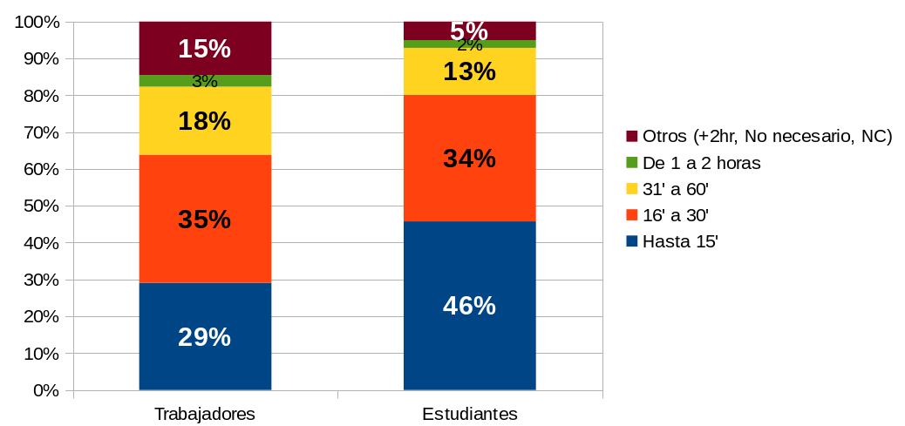
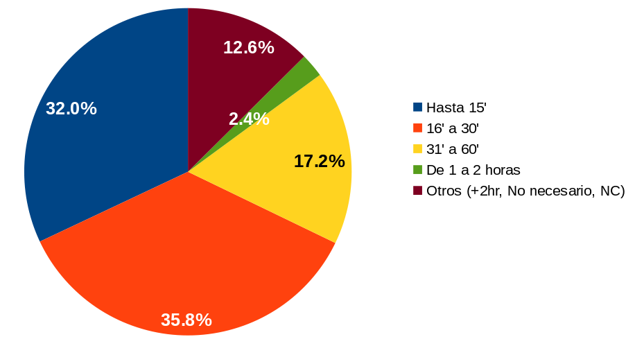
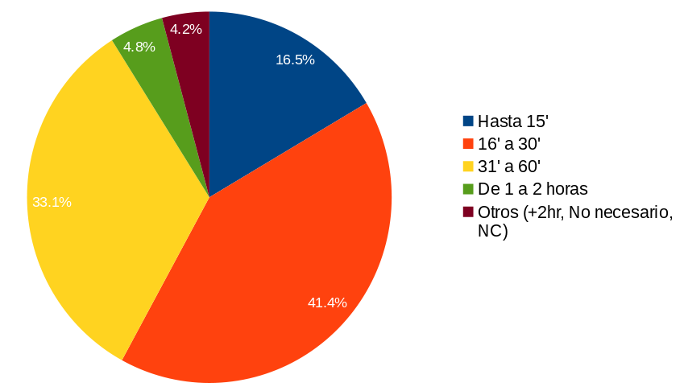
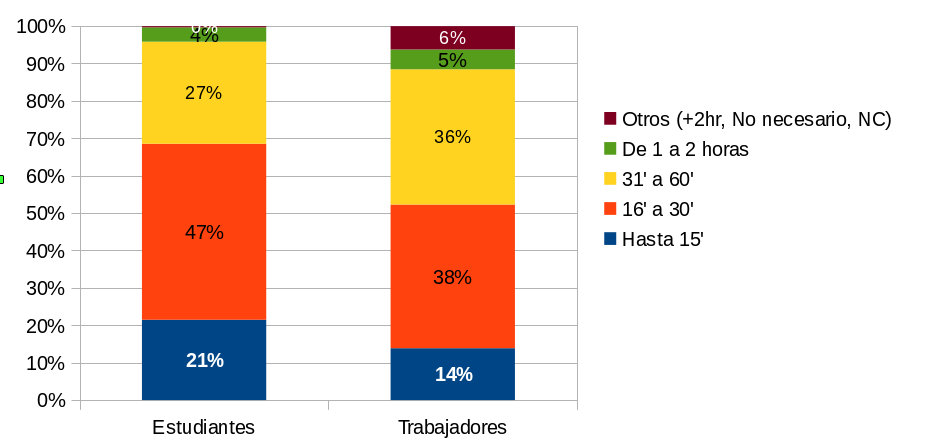
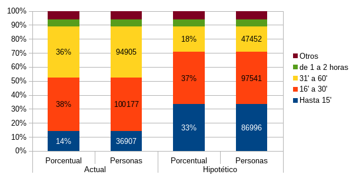

Con la firma del Convenio de Apoyo Financiero (CAF) para la implementación de un nuevo sistema de transporte público colectivo, Metrobús, entre Torreón y Matamoros, Coahuila por parte del Alcalde de Torreón, el Ing. Miguel Ángel Riquelme Solís, es pertinente analizar algunos datos sobre la problemática que este proyecto viene a atender, con impacto en la calidad de vida de la población: el tiempo que invierte la población que se traslada a sus trabajos y escuelas.
De acuerdo a la encuesta Intercensal de INEGI, realizada durante el mes de Marzo de 2015, en la Zona Metropolitana (ZML) habitamos 1,283,835 personas, referidas a los municipios de Torreón, Matamoros, Gómez Palacio y Lerdo.
De las cuales, y con la finalidad de realizar un análisis lo más amplio posible sobre la movilidad, se delimita como usuarios independientes de transporte al grupo de edad de 12 a 65 años. Esto debido a que es el segmento que no depende de otros factores para realizar sus actividades cotidianas, salvo algunas particularidades. En el caso de los menores de 12 años es por considerar una dependencia familiar más acentuada, que culmina con el ingreso a la educación secundaria del pre-adolescente. La población mayor de 65 años es debido principalmente a que este grupo es el que cuenta con una mayor diversidad de limitaciones funcionales y que requieren infraestructura con características especiales.
De la población perteneciente a este segmento etario tenemos un total de 890,580 personas de las cuales se estimaron 643,7681(1) personas tienen necesidad de trasladarse dentro de la metrópolis por motivos de trabajo o estudio.
Panorama general del tiempo de traslado en la Zona Metropolitana de La Laguna
¿Cuanto tarda una persona en trasladarse de su casa a su escuela o trabajo? De las 643,768 personas estimadas en la ZML entre 12 y 65 años que pudieron definir el tiempo aproximado que duran sus traslados cotidianos. El 33.8% se encuentra en el rango más bajo y deseable. 217,832 habitantes de la ZML utilizan hasta 15 minutos en trasladarse ya sea a su lugar de trabajo o de estudio. 222,998 personas invierten desde 16' hasta media hora, el 34.6%. Aunque es el segmento donde se aglutinan la mayor cantidad de personas, se encuentra cercano al rango de menor inversión de tiempo.
El 16.8% invierte desde 31 minutos hasta una hora en sus viajes, representando a 108,357 personas y 18,505 de una a dos horas. Juntando estos dos grupos tenemos al 19.7% de la población de la ZML.
Un caso especial a tener en cuenta es la población que respondió: No es necesario el traslado, agrupada en el campo de Otros, con el 4.9% del 11.8%, suponiendo que a pesar de tener trabajo o estar estudiando lo pueden realizar desde su hogar, nos obliga a pensar en el crecimiento de esquemas de emprendedurismo, vivienda-oficina, labores productivas vía internet, educación en línea, entre otros conceptos.
Gráfico 1: Tiempos de traslados en ZML
| Tiempo | Porcentaje |
|---|---|
| Hasta 15' | 34% |
| 16' a 30' | 35% |
| 31' a 60' | 17% |
| De 1 a 2 horas | 3% |
| Otros (+2hr, no necesario, NC) | 12% |
Entre trabajadores y estudiantes
Del total de los habitantes con necesidad de trasladarse considerados, la distribución entre trabajadores y estudiantes es de un 70% y 30% respectivamente, considerando su actividad principal.
Al realizar la comparación de los tiempos de traslado entre los trabajadores y estudiantes (gráfico 2) podemos ver que las personas que invierten de 16' a 30' prácticamente representan el mismo porcentaje: 35 y 34%, de igual manera los grupos que tardan de 1 a 2 horas con el 3 y 2%.
Gráfico 2: Comparativa de tiempo de traslado

Sobresale que el 46% de los estudiantes que invierten hasta 15' y el 15% de los trabajadores agrupados en Otro, de los cuales el 5.8% manifiesta que no es necesario el traslado cotidiano.
Tiempos de viaje en Torreón
Al centrarnos en los habitantes de el municipio de Torreón, al disminuir el tiempo que se invierte en los traslados en transporte público vemos una oportunidad para desarrollar la competitividad en nuestra región y aumentar la calidad de vida. El tiempo ahorrado se puede utilizar para otras actividades.
Gráfico 3: Tiempos de traslados en Torreón

El panorama general en nuestra ciudad lo podemos ver en el gráfico 3, 32% de las personas invierte hasta 15' y 35.8% de 16' a 30'. 17.2% esta entre 31' a 1 hora. Dentro del segmento Otros, 12.6%, destaca que unicamente el 0.6% de la población tarda más de 2 horas en llegar a su trabajo y el 2.4% tarda de 1 a 2 horas; entre los últimos dos sumarían aproximadamente 10,651 torreonenses.
¿Cuánto tiempo invierten los usuarios del transporte público en Torreón?
Delimitando, únicamente a los usuarios de transporte público el 16.5% de las personas usuarias del transporte público invierten hasta 15' y 41.4% de 16' a 30'. 33.1% está entre 31' a 1 hora. Dentro del segmento Otros, 4.2%, destaca el 0.7% de la población que tarda más de 2 horas en llegar a su trabajo y el 4.8% tarda de 1 a 2 horas que probablemente laboren o estudien fuera de Torreón y los de más de dos horas en otro municipio fuera de la ZML.
Gráfico 4: Tiempos de traslados en Transporte Público

Comparando los tiempos generales en la ciudad con los minutos invertidos por los usuarios del transporte público podemos ir perfilando la población sobre la cuál se debe de trabajar en mejorar sus tiempos. La población que usa hasta 15' en trasporte público se duplica respecto a los usuarios de cualquier medio de transporte. Los que invierten de 16 a 30' permanece relativamente estable (esto nos hace considerar este rango de tiempo como una característica de la movilidad en la ciudad). Una tercera parte de la población invierte entre 31 y 1 hora, lo que significa mas de 40,000 usuarios de esta modalidad, que pasa entre 6 y 12 horas a la semana en un camión.
Estudiantes y trabajadores usuarios del transporte público de Torreón
Segmentando los tiempos de traslado en transporte público en Torreón por tipos de usuarios hay contrastes entre los tiempos de los trabajadores y los estudiantes. El 68% de los estudiantes llegan a tardar hasta 30', comparado con los trabajadores estos se agrupan en el 52% (gráfico 5). Aunque debemos considerar factores como la distancia del origen-destino o si el lugar de trabajo o estudio es en otro municipio y no necesariamente el traslado es diario.
Gráfico 5: Comparativa de tiempo de traslados en Transporte Público

Gráfico 6: Comparativo de tiempos de traslados de trabajadores

¿Que podemos esperar con la llegada del metrobús a la ZML?
La relación entre eficiencia del transporte público efectivo y competitividad es directa, incluso es un indicador del Índice de Competitividad Urbana del Instituto Mexicano para la Competitividad (IMCO). Pero para que la competitividad se traduzca también en calidad de vida debemos trazarnos objetivos medibles como lo es la reducción del tiempo de traslado, enfocando los esfuerzos hacia la población trabajadora representada en los rangos que invierten entre 16 minutos y una hora en traslados , se podría lograr que el 70 % de la población trabajadora invierta menos de media hora en cada traslado.
Notas
- No se contabilizó a las personas que declararon trabajar y estudiar, debido a las prioridades de traslado, unicamente el motivo principal.